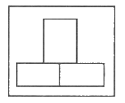
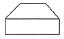
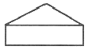
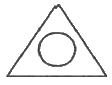
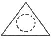
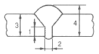
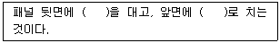

자동차차체수리기능사 (2011-04-17 기출문제)
1과목: 자동차공학
1. 자동차 전기장치에 관한 설명 중 틀린 것은?
- 자동차 전기장치에 전력을 공급하는 부품은 배터리와 발전기가 있다.
- 엔진 정지 시 전원은 배터리에 의해 공급되고 있다.
- 엔진 시동 후 전원 공급은 발전기가 하지만 경우에 따라 배터리 전원도 사용한다.
- 현재 대부분 승용차는 직류발전기를 주로 사용하고 있다.
(정답률: 87%)

2. 다음 여러 가지 일, 열량 및 에너지 단위 중에서 kcal로 환산되지 않는 것은?
- Btu
- erg
- kJ
- Pa
(정답률: 66%)
3. 자동차 엔진의 유해가스 저감대책과 직접적으로 관련되지 않은 것은?
- 촉매 변환기
- 더블 오버헤드 밸브
- EGR 밸브
- 캐니스터
(정답률: 76%)
4. 다음 중 차체(body)를 구성하는 외장부품은?
- 프레임
- 범퍼
- 계기패널
- 시트
(정답률: 74%)
5. 엔진이 운전석 아래에 설치된 형식으로 주로 버스나 트럭에 적용되는 차체형식은?
- 본네트(bonnet)형
- 캡오버(cap-over)형
- 코치(coach)형
- 노치백(notch back)형
(정답률: 82%)
6. 프레임(frame)과 차체(body)를 일체형으로 구성한 대표적인 차체 형식은?
- 모노코크
- 픽업
- 사다리형프레임
- 섀시
(정답률: 94%)
7. 4행정 기관의 회전력에 관한 설명 중 가장 거리가 먼 것은?
- 엔진 회전력은 토크라 불린다.
- 수직력이 F, 수직거리가 r이면 토크 T는 수직력과 수직거리를 곱한 것과 같다.
- 엔진의 회전속도가 N(rpm), 출력은 H(PS), 회전력이 T(kgf·m)라면 716H/R 이 성립한다.
- 엔진의 회전력은 힘X거리를 시간으로 나눈 값이다.
(정답률: 69%)
8. 타이어 트레드 고무의 표면 마모 현상과 관계없는 것은?
- 얼라인먼트(토인, 토아웃)에 의한 횡력
- 커브를 돌 때의 횡력
- 공기압, 하중, 속도, 도로상태 등의 사용조건
- 하이드로 플래닝(hydro planing)현상 시
(정답률: 81%)
9. 자재이음이란 두 대의 축이 어느 각도를 두고 교차할 때 자유로이 동력을 전달할 수 있는 장치를 말한다. 다음 중 자동차에서 주로 사용하는 자재이음의 종류가 아닌 것은?
- 슬립 조인트
- 플렉시블 조인트
- 등속 조인트
- 트러니언 조인트
(정답률: 57%)
10. 국제단위계(SI단위)에서 SI당위의 접두어로 표시되는 것 중 접두어의 명칭, 읽는 방법, 단위에 곱해지는 배수를 나열한 것으로 틀린 것은?
- M : 메가 106
- μ : 마이크로 10-3
- G : 기가 109
- n : 나노 10-9
(정답률: 75%)
11. 가스 압접의 특징 중 맞지 않는 것은?
- 접합부에 탈탄층이 없다.
- 장치가 간단하여 시설수리비가 싸다.
- 작업자의 숙련도에 크게 좌우되지 않는다.
- 용접봉과 용재를 필요로 한다.
(정답률: 59%)
12. 그리기 어려운 원호나 곡선을 그리는데 사용하는 제도 용구는?
- 삼각자
- 템플릿
- 운형자
- 스케일
(정답률: 82%)
13. 경도란 다음 중 무엇을 뜻하는가?
- 금속의 두꺼운 정도
- 금속의 굵은 정도
- 금속의 단단한 정도
- 금속의 무거운 정도
(정답률: 89%)
14. 탄소강의 설명 중 맞지 않는 것은?
- 담금질에 의하여 탄소강이 경화되는 정도는 탄소함유량, 담금질 온도, 냉각속도에 변화한다.
- 탄소강의 탄소함유량은 0.3% 이상이어야 한다.
- 산화방지를 위한 무산화 가열법에는 질소, 알곤 가스가 사용된다.
- Cr, Ni, Mo를 함유한 합금강은 질량의 효과가 커 열처리가 잘 된다.
(정답률: 61%)
15. 전기저항 스포트 용접기를 사용하여 차체패널의 양면 접합 작업 중 스파크가 발생하면서 차체 패널에 구멍이 발생하였다. 원인과 가장 거리가 먼 것은?
- 패널에 이물질이 부착되었다.
- 모재의 두께와 비교하여 전류가 낮다.
- 전극 팁 끝에 카본이 과다 부착되었다.
- 모재와 전극 팁에 접촉이 불량하다.
(정답률: 80%)
16. 산소 봄베에 각인된 기호 T.P가 뜻하는 것은?
- 내압시험 압력
- 최고충전 압력
- 용기 기호
- 용기 중량
(정답률: 66%)
17. 피복 금속 아크 용접시 용융속도에 관한 설명 중 관련 없는 것은?
- 단위 시간당 소비되는 용접봉의 길이
- 용융속도 = 아크전류 × 용접봉 전압강하
- 아크의 전압
- 단위 시간당 소비되는 용접봉의 무게
(정답률: 55%)
18. 보기의 정면도를 보고 다음 중 평면도로 가장 적합한 투상도는?





(정답률: 74%)
19. 홈 맞대기 용접의 용접부의 명칭 중 틀린 것은?

- 루트 면 - 1
- 루트 간격 - 2
- 판의 두께 - 3
- 살올림 - 4
(정답률: 67%)
20. 점 용접(spot welding)의 특징으로 틀린 것은?
- 작업 속도가 빠르다.
- 기술적인 숙련을 필요로 하지 않는다.
- 표면을 평활하게 할 수 있다.
- 용접 후 변형이 크다.
(정답률: 69%)
2과목: 자동차차체정비
21. 다음 황동의 설명 중 틀린 것은?
- 구리와 아연의 함유 비율에 따라 구분한다.
- 7-3 황동은 아연 70%, 구리 30% 이다.
- 6-4 황동은 주황색을 띄며 인장강도가 높다.
- 7-3 황동은 황금색을 띄며 연신율이 좋다.
(정답률: 65%)
22. 차체의 경량화와 함께 주행시 소음을 감소시키기 위해 사용되는 강판은?
- 양면처리 강판
- 아연도금 강판
- 제진 강판
- 단면처리 강판
(정답률: 60%)
23. 탄소에 의한 철강의 분류에 해당되지 않는 것은?
- 연강
- 경강
- 고탄소강
- 니켈
(정답률: 87%)
24. 착색이 용이하고 무색 투명하며, 표면이 강하고 내습성이 취약한 수지는?
- 엘라민 수지
- 페놀 수지
- 에폭시 수지
- 요소 수지
(정답률: 54%)
25. MIG 용접과 거의 같은 방식으로 불활성가스 대신 CO2 가스를 사용하며, 적당한 탈산제(Si, Mn)를 포함한 와이어를 사용하는 용접은?
- 테르밋 용접
- 서브머지드 용접
- MIG 용접
- 탄산가스 아크 용접
(정답률: 80%)
26. 자동차가 사이드 레일이나 중앙 분리대 등에 고속 충돌시 발생하는 현상으로 차체가 꼬여 있는 것처럼 보이는 변형은?
- 종변형
- 횡변형
- 찌그러짐
- 비틀림
(정답률: 80%)
27. 자동차 프레임 보강판의 끝 부분을 가늘게 다듬질 한 다음 직각으로 해서는 안 되는 이유를 설명한 것 중 바르지 못한 것은?
- 집중응력을 피하기 위하여
- 무게의 균형을 잡기 위하여
- 균열을 피하기 위하여
- 절손을 방지하기 위하여
(정답률: 65%)
28. 모노코크 바디의 장점이다. 옳지 않은 것은?
- 일체로 된 구조이기 때문에 정비하기가 쉽고 간단한다.
- 일체형이기 때문에 충격 흡수가 높고 안전성이 크다.
- 단독 프레임이 없기 때문에 차량 중량이 가볍다.
- 점용접이 많이 사용되므로 정밀도가 높다.
(정답률: 66%)
29. 변형된 패널을 추가 고정 없이 한쪽만 당기면 어떠한 현상이 발생하는가?
- 인장력이 작용한다.
- 전단력이 작용한다.
- 모멘트가 작용한다.
- 압축력이 작용한다.
(정답률: 65%)
30. 두꺼운 도막을 급격히 가열했을 때 발생할 수 있는 결함은?
- 크레이터링
- 핀홀
- 흐름
- 침전
(정답률: 74%)
31. 차체 부품 제작시 리벳 구멍의 지름은 리벳 몸체 지름보다 어느 정도 크게 하는가?
- 1~1.2mm
- 2~2.2mm
- 3~3.2mm
- 4~4.2mm
(정답률: 73%)
32. 패널의 용접 이음 방법 중 그 종류가 아닌 것은?
- 스포트 용접
- 미그(MIG)용접
- 납점
- 볼트 접합
(정답률: 75%)
33. 펜더 탈거 작업에 속하지 않는 것은?
- 헤드램프
- 프런트 휠 가드
- 범퍼 커버 사이드 마운팅 볼트
- 토션바
(정답률: 79%)
34. 다음 도료 중 녹의 발생 방지 및 후속으로 칠할 도료와 밀착을 좋게 하는 성능을 가진 것은?
- 서페이셔
- 프라이머
- 퍼티
- 실러
(정답률: 70%)
35. 연성이 풍부한 강, 니켈, 알루미늄, 구리 및 이들 합금의 얇은 판으로 원통형, 각기둥형, 원뿔형 등의 용기를 성형하는 가공은?
- 엠보싱
- 플랜징
- 드로잉
- 벌징
(정답률: 67%)
36. 퍼티는 경화제를 섞은 후 건조 속도가 빠르기 때문에 얼마의 시간 내에 작업하는 것이 가장 적합한가?
- 1~5분
- 5~10분
- 20~30분
- 30~40분
(정답률: 70%)
37. 가스절단 결함 중 균열의 원인이 아닌 것은?
- 탄소 함유량이 많다.
- 합금 성분이 많다.
- 불꽃이 너무 강하다.
- 모재의 예열이 충분하지 못하다.
(정답률: 51%)
38. 도막 형성조요소가 증발한 후 도체의 도막형성요소가 도막으로 되는 건조 방법은?
- 휘발건조
- 산화건조
- 냉각건조
- 중합건조
(정답률: 63%)
39. 포트파워(port-power)라 불리는 유압 바디 잭의 구성 요소가 아닌 것은?
- 유압 펌프
- 고압 호스
- 체인 블록
- 스피드 커플러
(정답률: 60%)
40. 모노코크차체에서 충돌이 일어나면 그 충돌력이 어떤 모양으로 충돌점에서 퍼져 나가는가?
- 원뿔형
- 사각형
- 원형
- 직선형
(정답률: 78%)
3과목: 안전관리
41. 금속재료에 굽힘 가공을 할 때 외력을 제거하면 원래의 상태로 되돌아가는 현상을 무엇이라 하는가?
- 소성
- 이방성
- 방향성
- 스프링 백
(정답률: 71%)
42. 전기 저항 스포트 용접기의 타점 간격은 1mm판일 때 강도상 필요한 최저 간격은 얼마인가?
- 0.5~5mm
- 1~10mm
- 5~15mm
- 20~25mm
(정답률: 42%)
43. 프레임 센터링 게이지를 설치할 때 고려해야 할 사항이 아닌 것은?
- 차체를 4개 부분으로 구분하여 설치한다.
- 센터 사이팅 핀을 정확하게 설치한다.
- 크로스 바의 설치 지점을 확인하고 설치한다.
- 기준 참조점에 파손이 없으면 설치하지 않는 다.
(정답률: 88%)
44. 변형된 패널을 원상 복구하기 위한 작업 설명 중( )안에 가장 적합한 것은?

- 돌리, 해머
- 해머, 돌리
- 해머, 해머
- 돌리, 돌리
(정답률: 90%)
45. 트램 게이지로 측정할 수 없는 것은?
- 로어암의 니백의 점검
- 상하 굽음의 점검
- 센터라인
- 개구부의 점검
(정답률: 68%)
46. 프레임 기준선에 의하여 데이텀 라인 게이지로 변형 상태를 점검할 때 주의할 사항이 아닌 것은?
- 바디(body) 치수도를 활용할 것
- 계측기기의 손상이 없을 것
- 차체를 회전시키면서 점검할 것
- 수평으로 확실하게 고정할 것
(정답률: 89%)
47. 도장 부스의 기능이 아닌 것은?
- 유기용제로부터 작업자를 보호한다.
- 다른 곳으로부터 도료 비산을 이루게 한다.
- 먼지, 오물 등의 접촉을 차단한다.
- 오염된 공기를 여과한다.
(정답률: 80%)
48. 스프레이 건과 피도물 사이의 거리로 적당한 것은?
- 1~5cm
- 5~15cm
- 15~25cm
- 30~50cm
(정답률: 72%)
49. 자동차의 프레임 교정에서 차체 치수(규정치수)가 정확하지 않으면 일어나는 현상이 아닌 것은?
- 타이어 편 마모
- 주행 중 핸들이 떨림
- 휠 얼라인먼트와 무관함
- 단차 및 간극 불량으로 소음 발생
(정답률: 85%)
50. 사이드 바디 패널을 구성하는 부품이 아닌 것은?
- 사이드 이너 센터 패널
- 루프 사이드 레일
- 프런트 필러 패널
- 루프 센터 패널
(정답률: 55%)
51. 화재 발생시 소화 작업 방법으로 틀린 것은?
- 산소의 공급을 차단한다.
- 유류 화재시 표면에 물을 붓는다.
- 가열물질의 공급을 차단한다.
- 점화원을 발화점 이하의 온도로 낮춘다.
(정답률: 91%)
52. 선반 작업시 주축의 변속은 기계를 어떠한 상태에서 하는 것이 가장 안전한가?
- 저속으로 회전시킨 후 한다.
- 기계를 정지시킨 후 한다.
- 필요에 따라 운전 중에 할 수 있다.
- 어떠한 상태든 항상 변속시킬 수 있다.
(정답률: 89%)
53. 스패너 작업시의 안전 수칙으로 틀린 것은?
- 주위를 살펴보고 조심성 있게 조일 것
- 스패너를 밀지 말고 몸 앞쪽으로 당길 것
- 스패너는 조금씩 돌리며 사용할 것
- 힘들 때는 스패너 자루에 파이프를 끼워서 작업할 것
(정답률: 91%)
54. 건설기계 및 자동차 정비 작업장에 산업안전 보건 상 준비해야 될 것과 거리가 먼 것은?
- 응급용 의약품
- 소화용구
- 소화기
- 방청용 오일
(정답률: 90%)
55. 전격방지기를 부착한 용접기의 적합한 설치장소로 거리가 먼 것은?
- 습기가 많지 않은 장소
- 분진, 유해가스 또는 폭발성 가스가 없는 장소
- 주위 온도가 항상 영상 이상의 온도가 유지되는 장소
- 비나 강풍에 노출되지 않는 장소
(정답률: 84%)
56. 올바른 브레이크 사용 방법 중 틀린 것은?
- 브레이크 계통에 수분이 묻으면 일시적으로 제동 효율은 떨어진다.
- 비탈길을 내려올 경우에는 엔진 브레이크를 사용한다.
- 주차 브레이크를 당긴 채 운행을 하면 브레이크 과열 및 고장의 원인이 된다.
- 젖은 도로 및 빙결된 도로에서 엔진 브레이크를 사용할 수 없다.
(정답률: 86%)
57. 안전모의 내면과 윗부분과의 안전간격은?
- 10mm 이상
- 15mm 이상
- 18mm 이상
- 25mm 이상
(정답률: 53%)
58. 차체 패널을 교환할 때 주의사항으로 틀린 것은?(오류 신고가 접수된 문제입니다. 반드시 정답과 해설을 확인하시기 바랍니다.)
- 보강 판이 없는 위치를 선택한다.
- 응력이 집중되지 않는 장소를 선택한다.
- 교환되는 부위의 마무리 작업이 쉬운 장소를 선택한다.
- 교환 작업에 필요한 부품이 비교적 많은 장소를 선택한다.
(정답률: 78%)
59. 가스용접에서 가스 분출구에 묻은 카본을 제거할 때 무엇을 이용하여 제거하는 것이 가장 적합한가?
- 동선이나 놋쇠선
- 줄(file)
- 철선이나 동선
- 시멘트 바닥
(정답률: 63%)
60. 분진에 의해 발생될 수 있는 직업병과 관련이 없는 것은?
- 규폐증
- 피부염
- 호흡기 질환
- 디스크
(정답률: 90%)